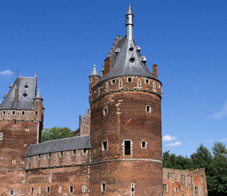

Love
Whether it’s shopping or eating, here is why you will fall in love with Brussels.
-
BRUSSELS VINTAGE MARKET
The city’s most popular vintage and second-hand market offers a day of shopping, food, music and fun. First Sunday of every month, 12-7pm | Halles Saint Géry | website
-
PARC DE BRUXELLES
Created in the 18th Century, this is one of the city’s best parks. Enjoy art, theatre, fountains and lush gardens. Site of The French Revolution and the Belgian War of Independence, it’s located in the heart of Brussels, in front of the Palace of the King.
-
RUE ANTOINE DANSAERT
This is the shopping spot to visit. Known for its hip and happening vibe, it’s where you’ll find stylish boutiques like Hatshoe and Stijl, Belgian designer Annemie Verbeke, local jeweller Christa Reniers, interior design shop La Fabrika, and Belgium’s emerging talent showcased at Glorybox. After shopping, head to super-cool bars on Place St.-Géry or nearby Place Ste.-Catherine for stylish bistros and outdoor food and flower markets.
-

Atomium
Built for the 1958 Universal Exhibition, this monument is, as the name suggests, an oversized model of an atom.
-

Beer
Belgium is famous for its beer, with over 500 different varieties.
-

Castles
There are more castles per square mile in Belgium than anywhere else in the world.
-
Lace
Producing lace since the Middle Ages, Belgium creates intricate patterns unmatched by any other country in the world.
-

Manneken Pis
Locals take much pride in this infamous bronze statue of a little boy urinating into a fountain.
-

TinTin
Fictional adventurer Tintin was created by Belgian cartoonist Hergé in 1929.